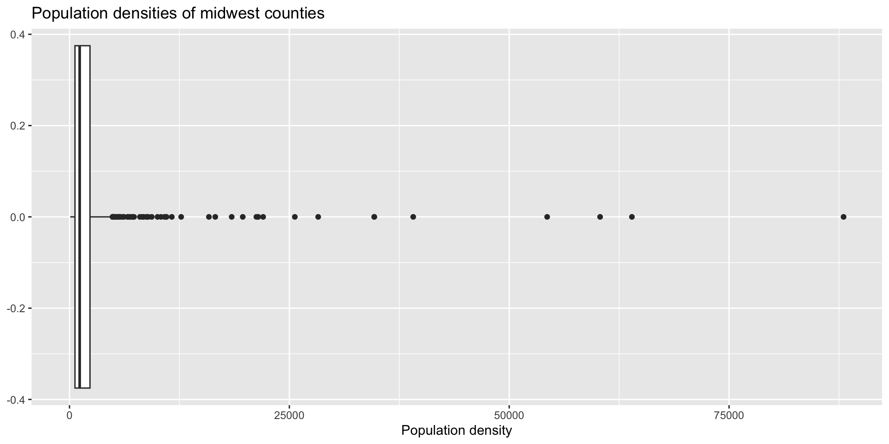
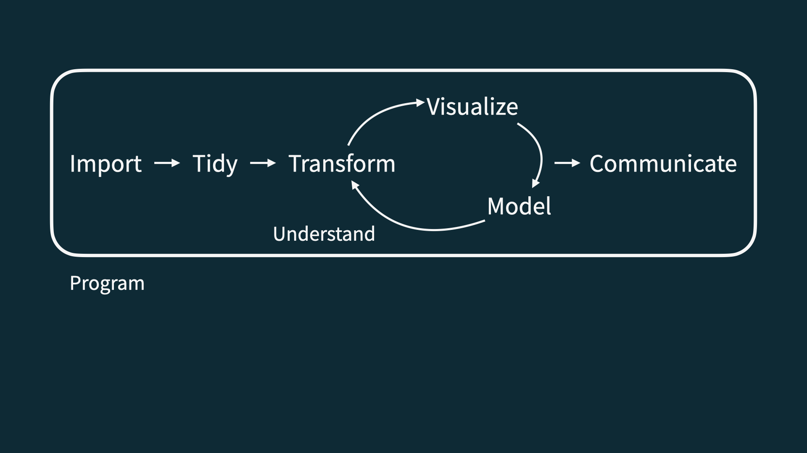
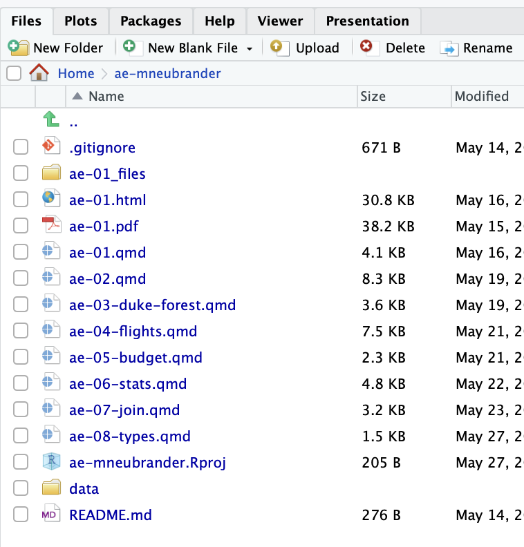
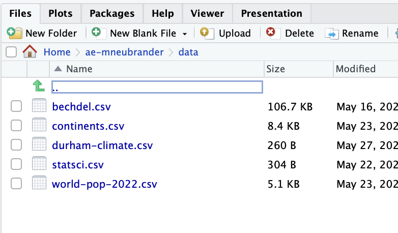
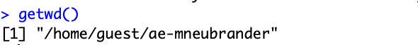
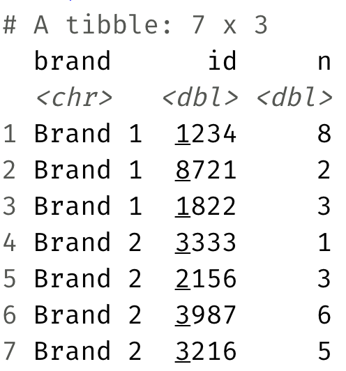

Data Importing
Lecture 9
May 28, 2025
Midterm Upcoming
Practice + some review + many more details tomorrow in class
Initial in-class practice questions are posted!
Questions??
Lab 2 Check-In
Some small clarifications
Question 7c: No code needed! Use results 7a and 7b to answer. You can delete the code chunk from the template!
Question 10b: ‘filter your reshaped dataset from question 10’ should be from question 9
Question 2c: ‘How is the output different from the one in part (a)?’ should say from part (b)
Workflow question added
Select pages on gradescope when you submit
At least three commits to your lab 2 repo
These should hopefully be free points!!!
Question 5
What is a ‘typical value’ of population density?
Question 5

# A tibble: 1 × 2
mean med
<dbl> <dbl>
1 3098. 1156.Let’s zoom out for a second
Data science and statistical thinking
Before Midterm 1…
- Data science: the real-world art of transforming messy, imperfect, incomplete data into knowledge;
After Midterm 1…
- Statistics: the mathematical discipline of quantifying our uncertainty about that knowledge.
Data science

Data science
- Collection: we won’t seriously study this; data importing coming today
-
for us: package data (
library()), data importing (read_csv), and webscraping (eventually)
-
but really: domain-specific issues of measurement, survey design, experimental design, etc
Data science
- Collection: we won’t seriously study this; data importing coming today
- Preparation: cleaning, wrangling, and otherwise tidying the data so we can actually work with it.
-
keywords:
mutate,fct_relevel,pivot_*,*_join
Data science
- Collection: we won’t seriously study this; data importing coming today
- Preparation: cleaning, wrangling, and otherwise tidying the data so we can actually work with it.
- Analysis: finally transform the data into knowledge…
-
pictures:
ggplot,geom_*, etc
-
numerical summaries:
summarize,group_by,count,mean,median,sd,quantile,IQR,cor, etc
- The pictures and the summaries need to work together!
Reading data into R
Package data
When data is in a pack, such as tidyverse, loading the pacakge gets our dataset
Most often, this is not the case
Reading in rectangular data

Reading rectangular data
- Using readr: (in tidyverse)
- Most commonly:
read_csv()- file saved as.csv - Maybe also:
read_tsv(),read_delim(), etc - other file formats
- Most commonly:
- Using readxl:
read_excel()- .xls or .xlsx
- Using googlesheets4:
read_sheet()– We haven’t covered this in the videos, but might be useful for your projects
Using read_csv()
Generally, the format is:
Path to file
Where is durham-climate.csv?


use
/to separate folder(s) + file names; file path in quotesAnswer:
Why not include ae-mneubrander?
Where is durham-climate.csv?

We can also write files!
This allows us to save data for later usage, sharing outside of R, etc.
Using write_csv():
Application exercise
Goal 1.1: Reading and writing CSV files
Read a CSV file with tidy data
Split it into subsets based on features of the data
Write out subsets as CSV files
Goal 1.2: Practice - Case When
-
case_when()is similar toif_else(), but allows multiple cases -
case_when()is often used inmutate()to make a new column
Age gap in Hollywood relationships

Goal 2.1: Reading Excel files & non-tidy data
Read an Excel file with non-tidy data
Tidy it up!
Goal 2.2: String Functions
We’ve seen lots of functions that deal with numeric data (mean, median, sum, etc.) - what about characters?
stringr is a tidyverse package with lots of functions for dealing with character strings
today: str_detect in stringr

Goal 2.2: String Functions
str_detect() identifies if some characters are a substring of a larger string
-
useful in cases when you need to check some condition, for example:
in a
filter()in an
if_else()orcase_when()
Goal 2.2: String Functions
str_detect() identifies if some characters are a substring of a larger string
-
useful in cases when you need to check some condition, for example:
in a
filter()in an
if_else()orcase_when()
example: which classes in a list are in the stats department?
Goal 2.2: String Functions
General form:
Sales data

Are these data tidy? Why or why not?
Sales data
What “data moves” do we need to go from the original, non-tidy data to this, tidy one?
